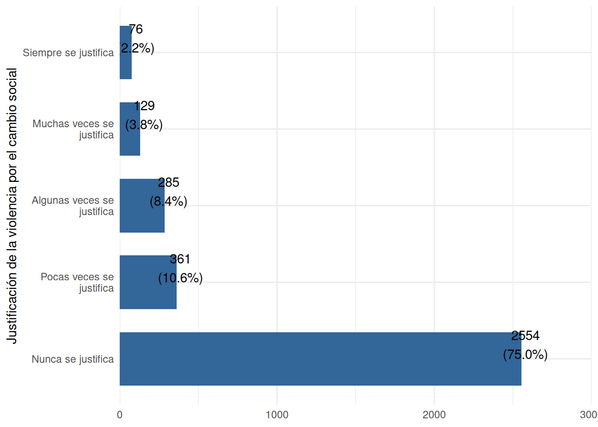
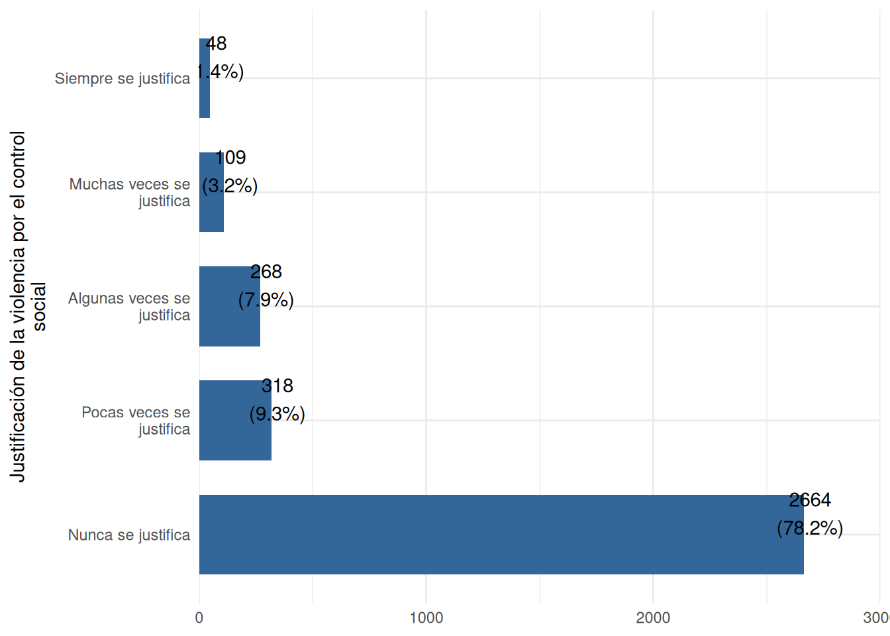

pacman::p_load(
tidyverse, # Manipulacion datos
sjPlot, # Graficos y tablas
sjmisc, # Descriptivos
kableExtra, # Tablas
psych, # Estadísticos
broom
) # Varios
options(scipen = 999) # para desactivar notacion cientifica
rm(list = ls()) # para limpiar el entorno de trabajoPráctico 5: Asociación entre categóricas
Sesión del martes, 15 de octubre de 2024
Objetivo de la práctica
El objetivo de esta guía práctica es introducir herramientas estadísticas para el análisis de relación entre variables categóricas (nominales).
En detalle, aprenderemos a:
- Aplicar coeficientes de correlación entre variables categóricas (nominales-ordinales)
- Generar y analizar tablas de contingencia (o cruzadas)
- Estimar e interpretar la prueba de Chi-cuadrado (\(X^2\))
- Interpretar medidas de magnitud para pruebas con variables categóricas
- Realizar pruebas de hipótesis para proporciones
En esta guía utilizaremos un ejemplo que desarrollaremos progresivamente para exponer los contenidos. Al final de esta guía se proporciona un ejercicio autónomo que deberá resolver de manera individual o grupal tomando como referencia el ejemplo aquí expuesto.
1. Pregunta de investigación
La violencia es un fenómeno con el que se debe coexistir, estableciendo límites para su uso. Las movilizaciones de 2019 en Chile representan un ejemplo de un evento que aumentó la justificación de la violencia como protesta y redujo la justificación de la violencia policial, lo que plantea preguntas sobre quiénes y por qué justifican la violencia.
El estudio de las justificaciones de la violencia distingue si esta se ejerce por el cambio social o por el control social. La violencia por el cambio social refiere a acciones que tengan por objetivo generar cambios en las estructuras jerarquicas de la sociedad, en tanto, la violencia por el control social refiere a aquellas acciones que tienen por objetivo mantener estas estructuras.
En la literatura, uno de los principales hallazgos es que personas que pertenecen a grupos desavantejados (ej. nivel socioeconómico) suelen justificar más la violencia por el cambio social y menos por el control social.
Considerando estos antecedentes, plantearemos dos preguntas de investigación:
Pregunta 1: ¿En qué medida se relacionan los ingresos con la justificación de la violencia por el cambio social en Chile al año 2019?
H1: A mayores ingresos, menor es la justificación de la violencia por el cambio social
Pregunta 2: ¿En qué medida se relacionan el el nivel educacional con la justificación de la violencia por el control social en Chile al año 2019?
H2: A mayor nivel educacional, mayor es la justificación de la violencia por el control social
Recursos de la práctica
En esta práctica trabajaremos con un subconjunto de datos previamente procesados de la Encuesta Social Longitudinal de Chile (ELSOC) para Chile del año 2019. Para este ejercicio, obtendremos directamente esta base desde internet. No obstante, también es posible acceder a la misma información a través del siguiente enlace: ELSOC 2019. Desde allí, podrás descargar el archivo que contiene el subconjunto procesado de la base de datos ELSOC 2019.
2. Datos y librerías
Comencemos por preparar nuestros datos. Iniciamos cargando las librerías necesarias.
Cargamos los datos directamente desde internet.
# Cargar bbdd desde internet
load(url("https://github.com/cursos-metodos-facso/datos-ejemplos/raw/refs/heads/main/elsoc2019_jv.RData"))A continuación, exploramos el subset de datos elsoc.
names(elsoc) # Nombre de columnas [1] "jv_control" "jv_cambio"
[3] "salario_perc_ceo" "salario_perc_obrero"
[5] "salario_just_ceo" "salario_just_obrero"
[7] "ingreso_justo" "ingreso"
[9] "ingreso_tramos" "educ"
[11] "ingreso_satisfact" "sexo"
[13] "indigena" "sdo_soc_ideal"
[15] "sdo_grupos_inferiores" "sdo_oportunidades_iguales"
[17] "sdo_condiciones_iguales" "rwa_gobierno_firme"
[19] "rwa_mandatario_fuerte" "rwa_valores_ninos"
[21] "rwa_obediencia_discplina" "trato_carab"
[23] "edad" "pos_pol"
[25] "frec_marcha" "conf_carab"
[27] "sj_gerente" "sj_gerente_rec"
[29] "jv_cambio_rec" "jv_control_rec"
[31] "ingreso_rec" "educ_rec" dim(elsoc) # Dimensiones[1] 3417 32Contamos con 32 variables (columnas) y 3417 observaciones (filas).
Ahora, realizaremos un pequeño procesamiento de nuestros datos con dplyr, todo de una vez mediante el uso de pipes %>%. Para recordar los pasos para el procesamiento de datos, revisar la guía práctica del curso de estadística descriptiva.
proc_elsoc <- elsoc %>% # seleccionamos
dplyr::select(
ingreso,
ingreso_rec,
educ,
educ_rec,
starts_with("jv")
)Ahora, exploremos estadísticos descriptivos de nuestra base procesada proc_elsoc
proc_elsoc %>%
select(ingreso, ingreso_rec, educ, educ_rec, jv_cambio, jv_cambio_rec, jv_control, jv_control_rec) %>%
sjmisc::descr(show = c("label", "range", "mean", "sd", "NA.prc", "n")) %>%
kable(., "markdown")| var | label | n | NA.prc | mean | sd | range | |
|---|---|---|---|---|---|---|---|
| 3 | ingreso | Ingresos del entrevistado | 2018 | 40.9423471 | 537927.1560951 | 587217.4858725 | 15000000 (0-15000000) |
| 4 | ingreso_rec | Ingresos mayores a 800.000 (binario) | 2018 | 40.9423471 | 0.1367691 | 0.3436886 | 1 (0-1) |
| 1 | educ | Nivel educacional del entrevistado | 3413 | 0.1170618 | 5.2510987 | 2.2385444 | 9 (1-10) |
| 2 | educ_rec | Educación universitaria o más (binario) | 3413 | 0.1170618 | 0.1259889 | 0.3318854 | 1 (0-1) |
| 5 | jv_cambio | Justificación de la violencia por el cambio social | 3405 | 0.3511853 | 1.4763583 | 0.9551252 | 4 (1-5) |
| 6 | jv_cambio_rec | Justificación de la violencia por el cambio social (binario) | 3405 | 0.3511853 | 0.2499266 | 0.4330339 | 1 (0-1) |
| 7 | jv_control | Justificación de la violencia por el control social | 3407 | 0.2926544 | 1.4029938 | 0.8712963 | 4 (1-5) |
| 8 | jv_control_rec | Justificación de la violencia por el control social (binario) | 3407 | 0.2926544 | 0.2180804 | 0.4130029 | 1 (0-1) |
3. Análisis
En ELSOC 2019 la justificación de la violencia se mide con una escala que incluye distintas situaciones de violencia. Nosotros tomaremos dos items:
Justificación de la violencia: F05 ¿En qué medida cree usted que se justifican o no se justifican las siguientes situaciones?
| Ítem | Categorías de respuesta |
|---|---|
| F05_03 Que Carabineros use la fuerza para reprimir una manifestación pacífica | Nunca se justifica (1); Pocas veces se justifica (2); Algunas veces de justifica (3); Muchas veces se justifica (4); Siempre se justifica (5) |
| F05_07 Que estudiantes tiren piedras a Carabineros en una marcha por la educación del país | Nunca se justifica (1); Pocas veces se justifica (2); Algunas veces de justifica (3); Muchas veces se justifica (4); Siempre se justifica (5) |
Veamos sus frecuencias:
plot1 <- sjPlot::plot_frq(proc_elsoc$jv_cambio) + coord_flip() + theme_minimal()
plot2 <- sjPlot::plot_frq(proc_elsoc$jv_control) + coord_flip() + theme_minimal()
plot1
plot2
Originalmente, esta variable es ordinal, sin embargo, para efectos del ejemplo de este práctico, trabajaremos con la variable recodificada de la siguiente manera:
- Justifica (1) = Pocas veces se justifica (2); Algunas veces de justifica (3); Muchas veces se justifica (4); Siempre se justifica (5)
- No justifica (0) = Nunca se justifica (1)
3.1 Correlación para variables nominales
3.1.1 Correlación punto biserial
La correlación punto biserial es una extensión del coeficiente de correlación de Pearson y se utiliza cuando una de las variables de estudio tienen un nivel de medición intervalar y la otra un nivel de medición nominal.
- El nombre de punto biserial es una forma de diferenciarla de la correlación de Pearson
- Esta diferenciación es importante ya que nos prevee de que hay que tener consideraciones con su interpretación, particularmente en lo que refiere al sentido
- En lo que respecta a la magnitud/tamaño y la inferencia, sigue la misma lógica que hemos visto con la correlación de Pearson
Para calcular este coeficiente en R utilizamos una función ya conocida: cor.test(). Probemoslo con las variables jv_cambio_rec e ingreso.
Primero, veamos la frecuencia de jv_cambio_rec e ingreso.
sjmisc::frq(proc_elsoc$jv_cambio_rec)
## Justificación de la violencia por el cambio social (binario) (x) <numeric>
## # total N=3417 valid N=3405 mean=0.25 sd=0.43
##
## Value | Label | N | Raw % | Valid % | Cum. %
## ------------------------------------------------------
## 0 | No justifica | 2554 | 74.74 | 75.01 | 75.01
## 1 | Justifica | 851 | 24.90 | 24.99 | 100.00
## <NA> | <NA> | 12 | 0.35 | <NA> | <NA>
mean(proc_elsoc$ingreso, na.rm = TRUE)
## [1] 537927.2Obtengamos la correlación punto biserial entre el ingreso y la justificación de la violencia por el cambio social.
cor.test(proc_elsoc$jv_cambio_rec, proc_elsoc$ingreso)
Pearson's product-moment correlation
data: proc_elsoc$jv_cambio_rec and proc_elsoc$ingreso
t = -0.51503, df = 2010, p-value = 0.6066
alternative hypothesis: true correlation is not equal to 0
95 percent confidence interval:
-0.05515929 0.03222920
sample estimates:
cor
-0.01148698 Vemos que la correlación entre el ingreso (ingreso) y la justificación de la violencia por el cambio social (jv_cambio_rec) es negativa, muy pequeña y no es estadísticamente significativa (\(r\) = -0.01; p > 0.05).
3.1.2 Correlación tetracorica
La correlación tetracórica también es una extensión del coeficiente de correlación de Pearson, con la diferencia de que se usa cuando ambas variables de estudio son nominales dicotomicas (2 valores).
- Se calcula en base a la frecuencias de cada combinación de valores (00,01,10,11).
- Supone que ambas variables son continuas y normalmente distribuidas antes de la categorización
Veamos como vería una correlación tetracórica entre nuestras variables de estudio. En este caso, vamos a usar jv_cambio_rec que ya es dicotomica (1 = Justifica, 0 = No justifica) y una versión recodificada del ingreso ingreso_rec, la cual identifica aquellos entrevistados que tienen un ingreso mayor o menor a 800.000 pesos (1 = Mayor a 800k, 0 = Menor a 800k)
Primero, veamos las frecuencias entre jv_cambio_rec e ingreso_rec.
sjmisc::frq(proc_elsoc$jv_cambio_rec)
## Justificación de la violencia por el cambio social (binario) (x) <numeric>
## # total N=3417 valid N=3405 mean=0.25 sd=0.43
##
## Value | Label | N | Raw % | Valid % | Cum. %
## ------------------------------------------------------
## 0 | No justifica | 2554 | 74.74 | 75.01 | 75.01
## 1 | Justifica | 851 | 24.90 | 24.99 | 100.00
## <NA> | <NA> | 12 | 0.35 | <NA> | <NA>
sjmisc::frq(proc_elsoc$ingreso_rec)
## Ingresos mayores a 800.000 (binario) (x) <numeric>
## # total N=3417 valid N=2018 mean=0.14 sd=0.34
##
## Value | Label | N | Raw % | Valid % | Cum. %
## ------------------------------------------------------
## 0 | Menor a 800k | 1742 | 50.98 | 86.32 | 86.32
## 1 | Mayor a 800k | 276 | 8.08 | 13.68 | 100.00
## <NA> | <NA> | 1399 | 40.94 | <NA> | <NA>Obtengamos la correlación tetracórica entre jv_cambio_rec e ingreso_rec.
matriz <- proc_elsoc %>%
dplyr::select(jv_cambio_rec, ingreso_rec) # creamos matriz con var de interes
psych::tetrachoric(matriz, na.rm = T)Call: psych::tetrachoric(x = matriz, na.rm = T)
tetrachoric correlation
jv_c_ ingr_
jv_cambio_rec 1.00
ingreso_rec 0.02 1.00
with tau of
jv_cambio_rec ingreso_rec
0.67 1.09 Vemos que la correlación entre los ingresos recodificados (ingreso_rec) y la justificación de la violencia por el cambio social (jv_cambio_rec) es positiva y muy pequeña (\(r\) = 0.02).
3.2 Tablas de contingencia
Las tablas de contingencia son herramientas estadísticas utilizadas para resumir y analizar la relación entre dos o más variables categóricas. Estas tablas muestran la frecuencia de diferentes combinaciones de categorías de las variables, facilitando la visualización de patrones o asociaciones.
Dicho de otra manera, podemos saber cuántos casos de una determinada categoría de la variable \(Y\) ocurren conjuntamente con una determinada categoría de la variable \(X\).
Veamos una tabla con nuestro ejemplo usando el comando sjtab.
proc_elsoc %>%
sjPlot::sjtab(ingreso_rec,
jv_cambio_rec,
show.row.prc = TRUE, # porcentaje fila
show.col.prc = TRUE # porcentaje columna
)| Ingresos mayores a 800.000 (binario) |
Justificación de la violencia por el cambio social (binario) |
Total | |
|---|---|---|---|
| No justifica | Justifica | ||
| Menor a 800k | 1273 73.3 % 86.5 % |
463 26.7 % 85.7 % |
1736 100 % 86.3 % |
| Mayor a 800k | 199 72.1 % 13.5 % |
77 27.9 % 14.3 % |
276 100 % 13.7 % |
| Total | 1472 73.2 % 100 % |
540 26.8 % 100 % |
2012 100 % 100 % |
| χ2=0.126 · df=1 · &phi=0.010 · p=0.723 | |||
En esta tabla vemos que los porcentajes coloreados en azul corresponde a las filas y el verde el porcentaje que corresponde a las columnas. Utilizando esta información podemos decir, por ejemplo:
El 72.1% de quienes ganan más de 800k no justifica la violencia por el cambio social
El 13.5% de quienes no justifican la violencia por el cambio social ganan más de 800k
Ahora, ¿cómo sabemos si hay asociación? Repliquemos el ejemplo que vimos en clases, utilizando nuestras variables. Imaginemos que tenemos una base de datos con N = 100.
# Ejemplo de asociación perfecta
tab1 <- data.frame(
"." = c("Menor a 800k", "Mayor a 800k", "Total"),
`No justifica` = c(0, 50, 50),
"Justifica" = c(50, 0, 50),
Total = c(50, 50, 100)
)
# Ejemplo de no asociación
tab2 <- data.frame(
"." = c("Menor a 800k", "Mayor a 800k", "Total"),
`No justifica` = c(25, 25, 50),
"Justifica" = c(25, 25, 50),
Total = c(50, 50, 100)
)Una distribución con evidencia “perfecta” para nuestra hipótesis alternativa se puede ver en la siguiente tabla:
tab1 %>%
kable(format = "html", align = "r", col.names = c("Ingreso", "No justifica violencia", "Justifica violencia", "Total")) %>%
kable_styling(bootstrap_options = c("striped", "hover", "condensed", "responsive"), full_width = T) %>%
kableExtra::kable_styling(latex_options = "hold_position", position = "center")| Ingreso | No justifica violencia | Justifica violencia | Total |
|---|---|---|---|
| Menor a 800k | 0 | 50 | 50 |
| Mayor a 800k | 50 | 0 | 50 |
| Total | 50 | 50 | 100 |
En contraste, una distribución que representaría un caso perfecto de no asociación, se puede ver en la siguiente tabla:
tab2 %>%
kable(format = "html", align = "r", col.names = c("Ingreso", "No justifica violencia", "Justifica violencia", "Total")) %>%
kable_styling(bootstrap_options = c("striped", "hover", "condensed", "responsive"), full_width = T) %>%
kableExtra::kable_styling(latex_options = "hold_position", position = "center")| Ingreso | No justifica violencia | Justifica violencia | Total |
|---|---|---|---|
| Menor a 800k | 25 | 25 | 50 |
| Mayor a 800k | 25 | 25 | 50 |
| Total | 50 | 50 | 100 |
3.3. Prueba de hipótesis con Chi cuadrado (\(X^2\))
Para determinar si existe una asociación significativa entre dos variables categóricas se utiliza la prueba de Chi-cudrado (\(X^2\)). Esta se basa en un test de diferencia, donde se compara nuestra tabla de contingencia y una tabla donde no existe asociación entre variables (\(H_0\)), que representa la hipótesis nula. La lógica detrás es que si nuestra tabla es significativamente distinta de una tabla sin asociación, entonces podemos rechazar la hipóteis nula.
Prueba de Chi-cuadrado
Contrastamos la hipótesis nula (o de trabajo) de que las variables son independientes entre ellas: \[ H_{0}: \pi_{fc} = \pi_{f}\pi_{c} \]
En relación a una hipótesis alternativa sobre que las variables están relacionadas: \[ H_{A}: \pi_{fc} \neq \pi_{f}\pi_{c} \]
En R, utilizamos la función chisq.test():
chi_results <- chisq.test(proc_elsoc$ingreso_rec, proc_elsoc$jv_cambio_rec)
chi_results
Pearson's Chi-squared test with Yates' continuity correction
data: proc_elsoc$ingreso_rec and proc_elsoc$jv_cambio_rec
X-squared = 0.1257, df = 1, p-value = 0.7229Obtuvimos nuestro resultado, pero no es muy amigable a la vista. Generemos una tabla de calidad para que sea reportable.
stats.table <- tidy(chi_results)
stats.table %>%
dplyr::mutate(
statistic = round(statistic, 2),
p_value = case_when(
p.value < 0.05 & p.value > 0.01 ~ "< 0.05*",
p.value < 0.01 & p.value > 0.001 ~ "< 0.01**",
p.value < 0.001 ~ "< 0.001***",
TRUE ~ ""
)
) %>%
dplyr::select(statistic, p_value, parameter, method) %>%
kableExtra::kable(
format = "html",
col.names = c("X2", "p-value", "df", "Método"),
booktabs = T,
caption = "Prueba de Chi-cuadrado entre justificación de la violencia por cambio social e injusticia distributiva"
) %>%
kableExtra::kable_styling(
bootstrap_options = c("striped", "hover", "condensed", "responsive"),
full_width = T,
latex_options = "hold_position",
position = "center"
) %>%
column_spec(4, width = "8cm")| X2 | p-value | df | Método |
|---|---|---|---|
| 0.13 | 1 | Pearson's Chi-squared test with Yates' continuity correction |
A partir de estos resultados, podemos reportar lo siguiente:
A raíz de la prueba de \(X^2\), vemos que no existe evidencia para rechazar la hipótesis nula sobre no asociación. Por ende, la asociación entre los ingresos y la justificación de la violencia por el cambio social no es estadísticamente significativa (\(X^2\) = 0.126, p > 0.05)
3.4. Tamaño de efecto con Phi y V de Cramer
Estadístico Phi (Φ)
El estadístico Phi mide la asociación entre dos variables categóricas en una tabla de contingencia de 2x2. La fórmula es:
\[ \Phi = \sqrt{\frac{\chi^2}{n}} \]
donde:
- \(\chi^2\) es el valor del estadístico chi-cuadrado,
- \(n\) es el tamaño total de la muestra.
El valor de \(\Phi\) varía entre -1 y 1. Un valor de 0 indica ausencia de asociación, mientras que valores cercanos a -1 o 1 indican una asociación más fuerte.
V de Cramer
El V de Cramer es una extensión del estadístico Phi para tablas de contingencia mayores de 2x2. Su fórmula es:
\[ V = \sqrt{\frac{\chi^2}{n(k-1)}} \]
donde:
- \(\chi^2\) es el valor del chi-cuadrado,
- \(n\) es el tamaño de la muestra,
- \(k\) es el número de filas o columnas, el que sea menor.
Los valores de \(V\) también varían entre 0 y 1, donde 0 indica ausencia de asociación, y valores cercanos a 1 indican una asociación más fuerte.
En nuestro ejemplo, nuestra tabla de contingencia es de 2x2, por ende, debemos usar el estadístico Phi. En R lo podemos calcular directamente siguiendo la formula:
# Guardar el test de chi cuadrado
chi_result <- chisq.test(proc_elsoc$ingreso_rec, proc_elsoc$jv_cambio_rec)
n <- na.omit(proc_elsoc %>% select(ingreso_rec, jv_cambio_rec)) %>% nrow()
# Cálculo de Phi
phi <- sqrt(chi_result$statistic / n)
phi X-squared
0.007904267 Con un valor de 0.008, vemos que la magnitud de la asociación entre las variables es muy baja.
3.5 Test de proporciones
El test de proporciones es una prueba estadística que se utiliza para comparar las proporciones de éxito (o cualquier categoría de interés) entre dos o más grupos. Es especialmente útil cuando se trabaja con variables categóricas binarias (por ejemplo, sí/no, éxito/fallo) y queremos verificar si las proporciones de estas categorías son significativamente diferentes entre los grupos.
Este test evalúa la hipótesis nula de que las proporciones en diferentes grupos son iguales frente a la hipótesis alternativa de que al menos una de las proporciones es diferente.
En este caso, nos puede ser de utilidad si queremos conocer si la proporción de personas que justifican la violencia por el cambio social es estadísticamente diferente entre quienes tienen ingresos mayores a 800k y quienes tienen ingresos menores a 800k.
Esto se prueba en R de la siguiente manera:
# Veamos el conteo por categorías
table(proc_elsoc$ingreso_rec, proc_elsoc$jv_cambio_rec)
0 1
0 1273 463
1 199 77# Insertemos los datos a mano
prop.test(
c(463, 77), # Conteo de exitos por grupo (Justifica x Menor a 800k y Justifica x Mayor a 800k)
c((1273 + 463), (199 + 77)) # Suma por grupo (Menor a 800k y Mayor a 800k)
)
2-sample test for equality of proportions with continuity correction
data: c(463, 77) out of c((1273 + 463), (199 + 77))
X-squared = 0.1257, df = 1, p-value = 0.7229
alternative hypothesis: two.sided
95 percent confidence interval:
-0.07123493 0.04667405
sample estimates:
prop 1 prop 2
0.2667051 0.2789855 A raíz de la prueba de hipótesis de proporciones, podemos reportar lo siguiente:
Al 95% de confianza, no existe evidencia para rechazar la hipótesis nula de no diferencia en la proporción de personas que justifican la violencia por el cambio social entre ambas categorías de ingreso (p > 0.05). Es decir, no existen diferencias estadísticamente significativas en la proporción de personas que justifican la violencia por el cambio social entre quienes ganan más de 800k y menos de 800k.
4. Conclusiones
En el presente ejercicio indagamos en la relación entre los ingresos de las personas y las justificaciones de la violencia por el cambio social en Chile al año 2019. Considerando que las variables de estudio tenían un nivel de medición categórico nominal, utilizamos la técnica de Chi-cuadrado \(X^2\) para el contraste de hipótesis.
La hipótesis planteada inicialmente sugería que los ingresos podrían estar asociados con las actitudes hacia la justificación de la violencia como una forma de cambio social. Sin embargo, los resultados de la prueba \(X^2\), como se muestra en la Tabla 1, indican que no existe una asociación estadísticamente significativa entre estas variables (\(X^2\) = 0.126, p > 0.05).
Esto significa que, según los datos analizados, los ingresos no parecen ser un factor que influya en la justificación de la violencia para el cambio social. En otras palabras, las personas con diferentes niveles de ingresos no muestran diferenciasen sus actitudes hacia la justificación de la violencia. Por lo tanto, no podemos concluir que los ingresos estén relacionados con la justificación de la violencia en el contexto del cambio social en Chile en 2019.
Ejercicio autónomo
A partir de la base de datos de proc_elsoc responda la pregunta 2 planteada al inicio de este ejercicio. Es decir: ¿En qué medida se relacionan el nivel educacional y la justificación de la violencia por el control social en Chile al año 2019?
- Estime la correlación adecuada para
educyjv_control_rec.
Para determinar cuál es la correlación adecuada entre educ y jv_control_rec tenemos que tener en consideración el nivel de medición de estas variables. Vemos que educ es continua y jv_control_rec es una variable categorica nominal binaria. Para estos casos, una buena alternativa es la correlación punto biserial. Estimemosla en R:
cor.test(proc_elsoc$educ, proc_elsoc$jv_control_rec)
Pearson's product-moment correlation
data: proc_elsoc$educ and proc_elsoc$jv_control_rec
t = -3.3769, df = 3401, p-value = 0.0007414
alternative hypothesis: true correlation is not equal to 0
95 percent confidence interval:
-0.09123086 -0.02425427
sample estimates:
cor
-0.05780761 Vemos que la correlación entre el nivel educacional (educ) y la justificación de la violencia por el control social (jv_control_rec) es negativa, muy pequeña y es estadísticamente significativa (\(r\) = -0.06; p < 0.05).
- Presente en una tabla de contingencia entre las variables
educ_recyjv_control_rec.
Seguimos trabajando con jv_control_rec, pero ahora con educ_rec que corresponde al nivel educacional recodificado en dos categorías: 1 = Universitario o más y 0 = No universitario. Una tabla de contingencia la podemos realizar con la función sjtab() del paquete sjPlot.
sjPlot::sjtab(proc_elsoc, educ_rec, jv_control_rec, show.row.prc = TRUE, show.col.prc = TRUE)| Educación universitaria o más (binario) |
Justificación de la violencia por el control social (binario) |
Total | |
|---|---|---|---|
| No justifica | Justifica | ||
| No universitaria | 2315 77.8 % 87 % |
661 22.2 % 89.2 % |
2976 100 % 87.5 % |
| Universitaria o más | 347 81.3 % 13 % |
80 18.7 % 10.8 % |
427 100 % 12.5 % |
| Total | 2662 78.2 % 100 % |
741 21.8 % 100 % |
3403 100 % 100 % |
| χ2=2.448 · df=1 · &phi=0.028 · p=0.118 | |||
- Calcule el estadístico de Chi cuadrado (\(X^2\)) entre las variables
educ_recyjv_control_rec.
El Chi cuadrado (\(X^2\)) entre las variables educ_rec y jv_control_rec los podemos obtener a partir de la función chisq.test():
chisq.test(proc_elsoc$educ_rec, proc_elsoc$jv_control_rec)
Pearson's Chi-squared test with Yates' continuity correction
data: proc_elsoc$educ_rec and proc_elsoc$jv_control_rec
X-squared = 2.4482, df = 1, p-value = 0.1177A partir de estos resultados, podemos reportar lo siguiente:
A raíz de la prueba de \(X^2\), vemos que no existe evidencia para rechazar la hipótesis nula sobre no asociación. Por ende, la asociación entre el nivel educacional y la justificación de la violencia por el control social no es estadísticamente significativa (\(X^2\) = 2.448, p > 0.05)
- Interprete los resultados obtenidos. Responda la pregunta de investigación a raíz de los calculos desarrollados.
En el presente ejercicio indagamos en la relación entre el nivel educacional de las personas y las justificaciones de la violencia por el control social en Chile al año 2019. Considerando que las variables de estudio tenían un nivel de medición categórico nominal, utilizamos la técnica de Chi-cuadrado \(X^2\) para el contraste de hipótesis.
La hipótesis planteada inicialmente sugería que el nivel educacional podría estar asociado con las actitudes hacia la justificación de la violencia como una forma de control social. Sin embargo, los resultados de la prueba \(X^2\), indican que no existe una asociación estadísticamente significativa entre estas variables (\(X^2\) = 2.448, p > 0.05).
Esto significa que, según los datos analizados, el nivel educacional no parecen ser un factor que influya en la justificación de la violencia para el control social, por lo tanto, no podemos concluir que el nivel educacional estén relacionados con la justificación de la violencia en el contexto del cambio social en Chile en 2019.